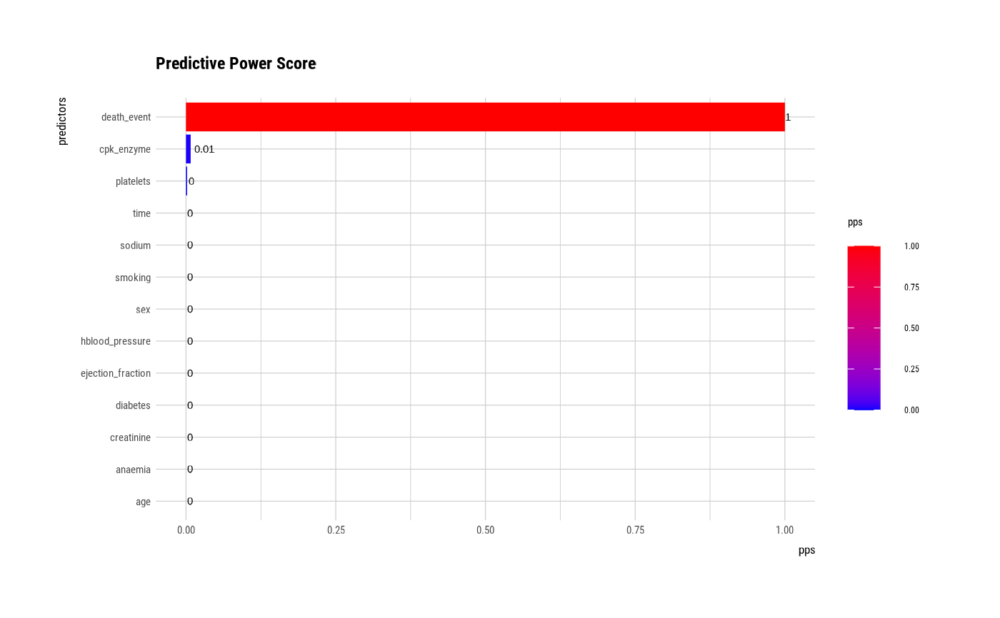
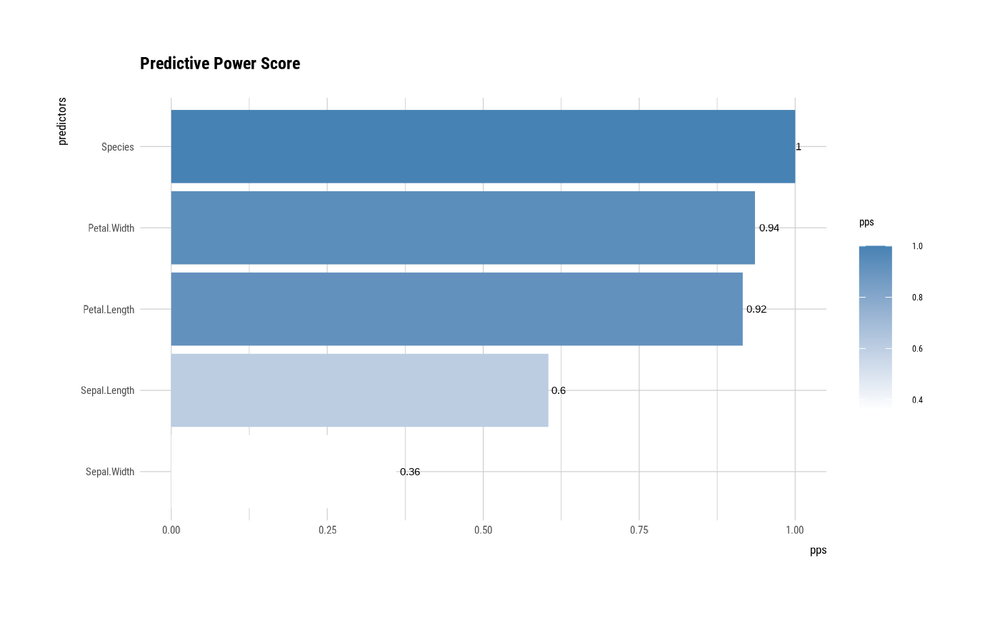

The pps() compute PPS(Predictive Power Score) for exploratory data analysis.
pps(.data, ...)
# S3 method for target_df
pps(.data, ..., cv_folds = 5, do_parallel = FALSE, n_cores = -1)a target_df.
one or more unquoted expressions separated by commas. You can treat variable names like they are positions. Positive values select variables; negative values to drop variables. If the first expression is negative, describe() will automatically start with all variables. These arguments are automatically quoted and evaluated in a context where column names represent column positions. They support unquoting and splicing.
integer. number of cross-validation folds.
logical. whether to perform score calls in parallel.
integer. number of cores to use, defaults to maximum minus 1.
An object of the class as pps. Attributes of pps class is as follows.
target : name of target variable
predictor : name of predictor
The PPS is an asymmetric, data-type-agnostic score that can detect linear or non-linear relationships between two variables. The score ranges from 0 (no predictive power) to 1 (perfect predictive power).
The information of PPS is as follows.
x : the name of the predictor variable
y : the name of the target variable
result_type : text showing how to interpret the resulting score
pps : the predictive power score
metric : the evaluation metric used to compute the PPS
baseline_score : the score of a naive model on the evaluation metric
model_score : the score of the predictive model on the evaluation metric
cv_folds : how many cross-validation folds were used
seed : the seed that was set
algorithm : text shwoing what algorithm was used
model_type : text showing whether classification or regression was used
RIP correlation. Introducing the Predictive Power Score - by Florian Wetschoreck
https://towardsdatascience.com/rip-correlation-introducing-the-predictive-power-score-3d90808b9598
# \donttest{
library(dplyr)
# If the target variable is a categorical variable
categ <- target_by(heartfailure, death_event)
# compute all variables
pps_cat <- pps(categ)
pps_cat
#> x y result_type pps
#> 1 age death_event predictive power score 0.000000000
#> 2 anaemia death_event predictive power score 0.000000000
#> 3 cpk_enzyme death_event predictive power score 0.007722988
#> 4 diabetes death_event predictive power score 0.000000000
#> 5 ejection_fraction death_event predictive power score 0.000000000
#> 6 hblood_pressure death_event predictive power score 0.000000000
#> 7 platelets death_event predictive power score 0.001804910
#> 8 creatinine death_event predictive power score 0.000000000
#> 9 sodium death_event predictive power score 0.000000000
#> 10 sex death_event predictive power score 0.000000000
#> 11 smoking death_event predictive power score 0.000000000
#> 12 time death_event predictive power score 0.000000000
#> 13 death_event death_event predictor and target are the same 1.000000000
#> metric baseline_score model_score cv_folds seed algorithm
#> 1 F1_weighted 0.4464149 0.2126817 5 1 tree
#> 2 F1_weighted 0.4464149 0.1582233 5 1 tree
#> 3 F1_weighted 0.4464149 0.2931573 5 1 tree
#> 4 F1_weighted 0.4464149 0.1582233 5 1 tree
#> 5 F1_weighted 0.4464149 0.1775409 5 1 tree
#> 6 F1_weighted 0.4464149 0.1582233 5 1 tree
#> 7 F1_weighted 0.4464149 0.3122878 5 1 tree
#> 8 F1_weighted 0.4464149 0.1842656 5 1 tree
#> 9 F1_weighted 0.4464149 0.2446663 5 1 tree
#> 10 F1_weighted 0.4464149 0.1582233 5 1 tree
#> 11 F1_weighted 0.4464149 0.1582233 5 1 tree
#> 12 F1_weighted 0.4464149 0.1453623 5 1 tree
#> 13 <NA> NA NA NA NA <NA>
#> model_type
#> 1 classification
#> 2 classification
#> 3 classification
#> 4 classification
#> 5 classification
#> 6 classification
#> 7 classification
#> 8 classification
#> 9 classification
#> 10 classification
#> 11 classification
#> 12 classification
#> 13 <NA>
# compute age and sodium variable
pps_cat <- pps(categ, age, sodium)
pps_cat
#> x y result_type pps metric
#> 1 age death_event predictive power score 0 F1_weighted
#> 2 sodium death_event predictive power score 0 F1_weighted
#> 3 death_event death_event predictor and target are the same 1 <NA>
#> baseline_score model_score cv_folds seed algorithm model_type
#> 1 0.4464149 0.2126817 5 1 tree classification
#> 2 0.4464149 0.2446663 5 1 tree classification
#> 3 NA NA NA NA <NA> <NA>
# Using dplyr
pps_cat <- heartfailure %>%
target_by(death_event) %>%
pps()
pps_cat
#> x y result_type pps
#> 1 age death_event predictive power score 0.000000000
#> 2 anaemia death_event predictive power score 0.000000000
#> 3 cpk_enzyme death_event predictive power score 0.007722988
#> 4 diabetes death_event predictive power score 0.000000000
#> 5 ejection_fraction death_event predictive power score 0.000000000
#> 6 hblood_pressure death_event predictive power score 0.000000000
#> 7 platelets death_event predictive power score 0.001804910
#> 8 creatinine death_event predictive power score 0.000000000
#> 9 sodium death_event predictive power score 0.000000000
#> 10 sex death_event predictive power score 0.000000000
#> 11 smoking death_event predictive power score 0.000000000
#> 12 time death_event predictive power score 0.000000000
#> 13 death_event death_event predictor and target are the same 1.000000000
#> metric baseline_score model_score cv_folds seed algorithm
#> 1 F1_weighted 0.4464149 0.2126817 5 1 tree
#> 2 F1_weighted 0.4464149 0.1582233 5 1 tree
#> 3 F1_weighted 0.4464149 0.2931573 5 1 tree
#> 4 F1_weighted 0.4464149 0.1582233 5 1 tree
#> 5 F1_weighted 0.4464149 0.1775409 5 1 tree
#> 6 F1_weighted 0.4464149 0.1582233 5 1 tree
#> 7 F1_weighted 0.4464149 0.3122878 5 1 tree
#> 8 F1_weighted 0.4464149 0.1842656 5 1 tree
#> 9 F1_weighted 0.4464149 0.2446663 5 1 tree
#> 10 F1_weighted 0.4464149 0.1582233 5 1 tree
#> 11 F1_weighted 0.4464149 0.1582233 5 1 tree
#> 12 F1_weighted 0.4464149 0.1453623 5 1 tree
#> 13 <NA> NA NA NA NA <NA>
#> model_type
#> 1 classification
#> 2 classification
#> 3 classification
#> 4 classification
#> 5 classification
#> 6 classification
#> 7 classification
#> 8 classification
#> 9 classification
#> 10 classification
#> 11 classification
#> 12 classification
#> 13 <NA>
# Using parallel process
pps_cat <- heartfailure %>%
target_by(death_event) %>%
pps(do_parallel = TRUE)
pps_cat
#> x y result_type pps
#> 1 age death_event predictive power score 0.000000000
#> 2 anaemia death_event predictive power score 0.000000000
#> 3 cpk_enzyme death_event predictive power score 0.007722988
#> 4 diabetes death_event predictive power score 0.000000000
#> 5 ejection_fraction death_event predictive power score 0.000000000
#> 6 hblood_pressure death_event predictive power score 0.000000000
#> 7 platelets death_event predictive power score 0.001804910
#> 8 creatinine death_event predictive power score 0.000000000
#> 9 sodium death_event predictive power score 0.000000000
#> 10 sex death_event predictive power score 0.000000000
#> 11 smoking death_event predictive power score 0.000000000
#> 12 time death_event predictive power score 0.000000000
#> 13 death_event death_event predictor and target are the same 1.000000000
#> metric baseline_score model_score cv_folds seed algorithm
#> 1 F1_weighted 0.4464149 0.2126817 5 1 tree
#> 2 F1_weighted 0.4464149 0.1582233 5 1 tree
#> 3 F1_weighted 0.4464149 0.2931573 5 1 tree
#> 4 F1_weighted 0.4464149 0.1582233 5 1 tree
#> 5 F1_weighted 0.4464149 0.1775409 5 1 tree
#> 6 F1_weighted 0.4464149 0.1582233 5 1 tree
#> 7 F1_weighted 0.4464149 0.3122878 5 1 tree
#> 8 F1_weighted 0.4464149 0.1842656 5 1 tree
#> 9 F1_weighted 0.4464149 0.2446663 5 1 tree
#> 10 F1_weighted 0.4464149 0.1582233 5 1 tree
#> 11 F1_weighted 0.4464149 0.1582233 5 1 tree
#> 12 F1_weighted 0.4464149 0.1453623 5 1 tree
#> 13 <NA> NA NA NA NA <NA>
#> model_type
#> 1 classification
#> 2 classification
#> 3 classification
#> 4 classification
#> 5 classification
#> 6 classification
#> 7 classification
#> 8 classification
#> 9 classification
#> 10 classification
#> 11 classification
#> 12 classification
#> 13 <NA>
# summary pps class
summary(pps_cat)
#> * Target variable : death_event
#> * Model type : classification
#> * Information of Predictive Power Score
#> predictors target pps
#> 1 death_event death_event 1.000000000
#> 2 cpk_enzyme death_event 0.007722988
#> 3 platelets death_event 0.001804910
#> 4 age death_event 0.000000000
#> 5 anaemia death_event 0.000000000
#> 6 diabetes death_event 0.000000000
#> 7 ejection_fraction death_event 0.000000000
#> 8 hblood_pressure death_event 0.000000000
#> 9 creatinine death_event 0.000000000
#> 10 sodium death_event 0.000000000
#> 11 sex death_event 0.000000000
#> 12 smoking death_event 0.000000000
#> 13 time death_event 0.000000000
# plot pps class
plot(pps_cat)

##---------------------------------------------------
# If the target variable is a numerical variable
num <- target_by(heartfailure, creatinine)
pps_num <- pps(num)
pps_num
#> x y result_type pps
#> 1 age creatinine predictive power score 2.385947e-02
#> 2 anaemia creatinine predictive power score 2.220446e-17
#> 3 cpk_enzyme creatinine predictive power score 0.000000e+00
#> 4 diabetes creatinine predictive power score 2.220446e-17
#> 5 ejection_fraction creatinine predictive power score 3.867160e-03
#> 6 hblood_pressure creatinine predictive power score 2.220446e-17
#> 7 platelets creatinine predictive power score 0.000000e+00
#> 8 creatinine creatinine predictor and target are the same 1.000000e+00
#> 9 sodium creatinine predictive power score 4.668837e-02
#> 10 sex creatinine predictive power score 2.220446e-17
#> 11 smoking creatinine predictive power score 2.220446e-17
#> 12 time creatinine predictive power score 2.449899e-02
#> 13 death_event creatinine predictive power score 1.124218e-01
#> metric baseline_score model_score cv_folds seed algorithm model_type
#> 1 MAE 0.5769394 0.5823726 5 1 tree regression
#> 2 MAE 0.5769394 0.5809674 5 1 tree regression
#> 3 MAE 0.5769394 0.6188263 5 1 tree regression
#> 4 MAE 0.5769394 0.5769394 5 1 tree regression
#> 5 MAE 0.5769394 0.5779185 5 1 tree regression
#> 6 MAE 0.5769394 0.5769394 5 1 tree regression
#> 7 MAE 0.5769394 0.6080260 5 1 tree regression
#> 8 <NA> NA NA NA NA <NA> <NA>
#> 9 MAE 0.5769394 0.5568668 5 1 tree regression
#> 10 MAE 0.5769394 0.5769394 5 1 tree regression
#> 11 MAE 0.5769394 0.5789835 5 1 tree regression
#> 12 MAE 0.5769394 0.5848750 5 1 tree regression
#> 13 MAE 0.5769394 0.5174630 5 1 tree regression
# summary pps class
summary(pps_num)
#> * Target variable : creatinine
#> * Model type : regression
#> * Information of Predictive Power Score
#> predictors target pps
#> 1 creatinine creatinine 1.000000e+00
#> 2 death_event creatinine 1.124218e-01
#> 3 sodium creatinine 4.668837e-02
#> 4 time creatinine 2.449899e-02
#> 5 age creatinine 2.385947e-02
#> 6 ejection_fraction creatinine 3.867160e-03
#> 7 anaemia creatinine 2.220446e-17
#> 8 diabetes creatinine 2.220446e-17
#> 9 hblood_pressure creatinine 2.220446e-17
#> 10 sex creatinine 2.220446e-17
#> 11 smoking creatinine 2.220446e-17
#> 12 cpk_enzyme creatinine 0.000000e+00
#> 13 platelets creatinine 0.000000e+00
# plot pps class
plot(pps_num)

# }